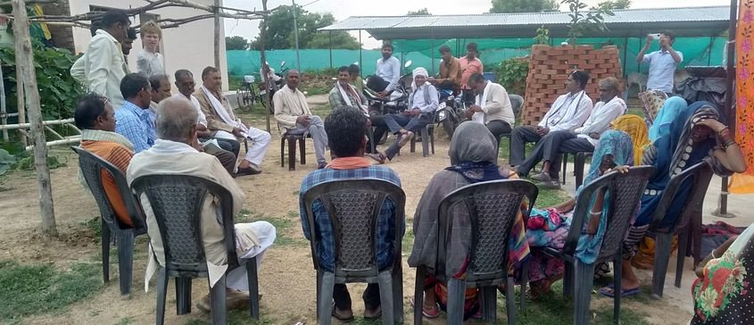

तकनीकी · ग्रामीण विकास · सेवा
बुंदेलखंड के हर गाँव के लिए आजीविका, सम्मान और आत्मनिर्भरता
जुलाई 2009 से SMNTGVSS देश के सबसे सूखा-प्रभावित क्षेत्रों में से एक, बाँदा के वंचित ग्रामीण समुदायों के साथ आजीविका, महिला नेतृत्व, कौशल विकास, गौ-कल्याण और प्राकृतिक संसाधनों पर कार्य कर रही है।



बाँदा की मिट्टी से जुड़े, सबसे वंचितों के लिए समर्पित
सत्तीदीन मुलिया नारायण तकनीकी एवं ग्रामीण विकास सेवा संस्थान, सोसाइटी रजिस्ट्रेशन एक्ट 1860 के अंतर्गत पंजीकृत (पंजीयन सं. 223/2009-10) है और इसका मुख्यालय बाँदा, उत्तर प्रदेश में है। संस्था बुंदेलखंड में सहभागी, समुदाय-आधारित दृष्टिकोण से कार्य करती है।
- गौशाला एवं स्वयं सहायता समूह के मॉडल ज़मीन पर सफल
- स्थानीय कर्मचारी, समुदाय से गहरा जुड़ाव
- पंजीकृत, सीएसआर-पात्र एवं ऑडिट-योग्य
छोटे आँकड़े, सच्चा बदलाव
ये आँकड़े संस्था के कार्यक्रम अभिलेखों पर आधारित हैं और उसकी परिचालन क्षमता के अनुरूप रखे गए हैं।
हम कहाँ काम करते हैं
ग्रामीण आजीविका, समुदाय और पर्यावरण के लिए आपस में जुड़े कार्यक्रम।
गौ-कल्याण एवं गौशाला
करबई जौहरी में सामुदायिक गौशाला — निराश्रित गोवंश के लिए चारा, पानी, आश्रय, स्वच्छता एवं पशु-चिकित्सा सहायता।
और जानें →महिला सशक्तिकरण एवं स्वयं सहायता समूह
महिला स्वयं सहायता समूहों का गठन व सुदृढ़ीकरण, नेतृत्व प्रशिक्षण, अधिकार-जागरूकता एवं एनआरएलएम से जुड़ाव।
और जानें →कौशल विकास एवं डिजिटल साक्षरता
बाँदा में ग्रामीण युवाओं के लिए कंप्यूटर साक्षरता केंद्र, साथ ही व्यावसायिक एवं रोजगार-उन्मुख प्रशिक्षण।
और जानें →टिकाऊ कृषि
लघु एवं सीमांत किसानों को उन्नत कृषि पद्धतियों, कृषि-निवेश सहायता, बाज़ार जुड़ाव एवं जागरूकता के माध्यम से सहयोग।
और जानें →जैविक एवं प्राकृतिक खेती
मृदा स्वास्थ्य सुधारने एवं लागत घटाने हेतु जैविक खाद एवं घनजीवामृत निर्माण का प्रशिक्षण।
और जानें →वाटरशेड एवं जल संरक्षण
सूखा-प्रभावित बुंदेलखंड में जल संचयन, जल संरक्षण एवं सतत जल प्रबंधन।
और जानें →सामुदायिक गौशाला, करबई जौहरी
- चुनौती: बिना आश्रय, चारे व पानी के निराश्रित गोवंश; फसल नुकसान एवं सड़क दुर्घटनाएँ
- पहल: हरा-सूखा चारा, स्वच्छ पानी, स्वच्छता एवं पशु-चिकित्सा सहित समुदाय-संचालित गौशाला
- परिणाम: 50+ गोवंश संरक्षित, फसल नुकसान में कमी, महिलाओं द्वारा दैनिक प्रबंधन, पड़ोसी गाँवों में यह मॉडल अपनाया गया

सीमित विकल्पों वाली एक विधवा से, गाँव की गौशाला रोज़ संभालने वाली आठ महिला स्वयंसेवकों की अगुवा तक।
श्रीमती सावित्री देवी · करबई जौहरी, बाँदा
जब SMNTGVSS ने उनके गाँव में सामुदायिक गौशाला स्थापित की, तब सावित्री देवी गौशाला प्रबंधन समिति से जुड़ीं। पशु देखभाल, रिकॉर्ड-रखरखाव एवं सामुदायिक समन्वय के प्रशिक्षण और मार्गदर्शन से आज वे चारा, स्वास्थ्य निगरानी व सफ़ाई का दैनिक कार्य संभालती हैं।
उनकी यात्रा ने गाँव की अन्य महिलाओं को भी विकास कार्यों से जुड़ने की प्रेरणा दी है, और ज़िला प्रशासन ने उन्हें सामुदायिक चैंपियन के रूप में सम्मानित किया।
क्षेत्र से कुछ पल


साथ मिलकर काम


पदाधिकारी
आलोक सिंह
रणनीतिक नेतृत्व, संस्थागत दिशा एवं सामुदायिक प्रतिनिधित्व।
रमा देवी साहू
बोर्ड नेतृत्व, शासन निगरानी एवं समन्वय में सहयोग।
लल्लू प्रसाद साहू
प्रशासन, संचालन एवं बोर्ड गतिविधियों का समन्वय; विकास क्षेत्र में 15+ वर्ष।
मिलें या कॉल करें
- पंजीकृत कार्यालयग्राम करबई, पोस्ट जौरही, तहसील बाँदा, ज़िला बाँदा, उत्तर प्रदेश – 210001
- प्रशासनिक कार्यालयए/235, आवास विकास कॉलोनी, बाँदा, उत्तर प्रदेश – 210001
- फ़ोन / व्हाट्सऐप+91 91188 05877 · कार्यालय: 09450-986795
सीएसआर टीमों एवं संस्थाओं के लिए
हम पंजीकरण दस्तावेज़ साझा करते हैं और आवश्यकता पर चर्चा के बाद प्रत्येक साझेदारी के लिए परियोजना प्रस्ताव व बजट तैयार करते हैं। हम 48 घंटे में उत्तर देते हैं।